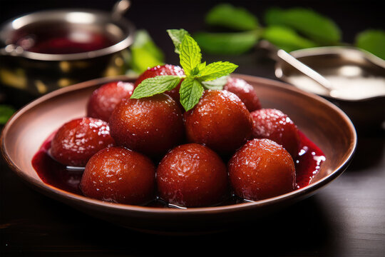

Gulab Jamun
Ingredients
- 1 cup Milk Powder
- 1/4 cup All-purpose Flour (Maida)
- 1/8 tsp Baking Soda
- 2 tbsp Ghee
- 2 tbsp Milk (adjust as needed)
- 1 cup Sugar
- 1 1/2 cups Water
- 4-5 Cardamom Pods (crushed)
- Oil or Ghee for frying
Recipe
- Mix milk powder, all-purpose flour, and baking soda in a bowl.
- Add ghee and milk to form a smooth dough. Rest for 10 minutes.
- In a pan, prepare sugar syrup by boiling sugar, water, and crushed cardamom pods. Simmer for 5 minutes.
- Shape the dough into small balls without cracks.
- Deep fry in medium-hot oil until golden brown.
- Soak fried balls in warm sugar syrup for at least 2 hours before serving.

Chicken Biryani
Ingredients
- 500g Chicken (cut into pieces)
- 2 cups Basmati Rice
- 3 tbsp Oil or Ghee
- 2 Onions (sliced)
- 2 Tomatoes (chopped)
- 1 cup Yogurt
- 4 Green Chilies (slit)
- 2 tsp Ginger-Garlic Paste
- Whole Spices: Bay Leaf, Cloves, Cinnamon, Cardamom
- 1 tsp Red Chili Powder
- 1 tsp Turmeric Powder
- 1 tsp Garam Masala
- Fresh Mint and Coriander Leaves
- Salt to taste
Recipe
- Wash and soak basmati rice for 30 minutes. Cook rice until 70% done and set aside.
- Heat oil in a pan, add whole spices, and sauté until aromatic.
- Add sliced onions and fry until golden brown.
- Add ginger-garlic paste, tomatoes, and green chilies. Cook until tomatoes are mushy.
- Mix in chicken, yogurt, red chili powder, turmeric, and salt. Cook until chicken is tender.
- Layer the chicken curry and cooked rice in a pot. Add mint, coriander, and garam masala between layers.
- Seal the pot with a lid and cook on low flame for 20 minutes (Dum).
- Serve hot with raita or salad.